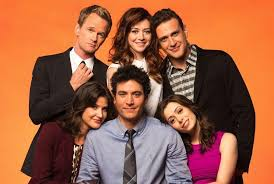

How I Met Your Mother • Fan-made
Welcome to the How I Met Your Mother Fandon
Explore the journey of Ted Mosby and his friends in New York City—romance, comedy, and the stories that led to the famous tale of how Ted met his mother.

Sitcom • Comedy / Romance
Created by: Carter Bays and Craig Thomas
Genre: Sitcom
Why visit this site?
Fun Facts
- Barney's famous "Legendary!" line was inspired by the real-life experiences of Carter Bays and Craig Thomas.
- The story of how Ted met his mother is based on flashbacks and flashforwards, making the narrative unique.
- The mysterious pineapple appeared in the episode "The Pineapple Incident" and sparked debate among fans for years.
- Robin Sparkles, Robin's alter ego, has parody songs from the '90s created by the writers.
- The series was originally planned to last five seasons, but ended up running for nine full seasons.
- The mother's name, Tracy McConnell, was kept secret until the final season to surprise fans.